Empire Stone × Empire Granite — QA
Golden Path — BOQ เส้นทาง 3: สร้าง BOQ เองในฟอร์ม
อัปเดตล่าสุด: 3 พฤศจิกายน 2569 (2026-11-03) · รันจริงบน eg-tst ผ่านหน้าจอ ใช้ผู้ใช้ emgdemo บริษัท Empire Granite
เส้นทางที่ไม่ใช้ไฟล์ Excel: พิมพ์รายการหินทีละโซนในฟอร์ม BOQ · สร้างค่าแรงและวัสดุสิ้นเปลืองจากชุดราคา · Export Excel / พิมพ์ PDF · ใบเสนอราคา · ผลิต ส่งของ ใบแจ้งหนี้ · เฉพาะ happy path
ประเด็นที่ต้องการการยืนยัน (ผู้จัดทำตัดสินใจแทนไปก่อน โปรดยืนยันหรือแจ้งให้ปรับ)
- ต้นทุนวัสดุสิ้นเปลืองและค่าแรงติดตั้งลงบัญชีตอนผลิตเสร็จ — ลงเป็นต้นทุนประมาณการ ตามต้นทุนต่อ ตร.ม. ของสินค้าในชุด (วัสดุ 90 · ค่าแรงติดตั้ง 500) เดบิต COGS เครดิต Accrued Expenses ไม่ได้ลงตอนส่งของ ขอยืนยันจังหวะและบัญชี
- ราคาขายค่าแรงติดตั้ง 1,500 ต่อ ตร.ม. — ปรับขึ้นจาก 800 เพื่อไม่ให้ต่ำกว่าค่าแรงโรงงาน 1,500 (ต้นทุนรวมค่าแรง 1,500 + 500 ติดตั้ง) ขอยืนยันราคานี้
- ค่าบริหารโครงการ 10% ของยอดงานรวม — คิดตอนออก BOQ แล้วคงที่ ไม่คำนวณใหม่เมื่อยอดเปลี่ยน ขอยืนยันว่าเป็นไปตามต้องการ
- Slab ห้ามซ้ำระหว่างใบสั่งผลิตที่ยังไม่เสร็จ — ระบบเลือกให้คนละแผ่น และไม่ให้บันทึกถ้าเลือกซ้ำด้วยมือ ขอยืนยันว่าไม่มีกรณีที่ต้องใช้แผ่นเดียวกันหลายใบ
14Test Case ทั้งหมด
4หมวด
11High Priority
3Medium Priority
0Low Priority
เอกสารชุดใหม่ของ BOQ — เส้นทาง 3 (แทนชุดเดิมที่ย้ายเข้า Archived แล้ว)
- ทำตามทีละขั้นด้วย คู่มือกดตาม BOQ สร้างเองในฟอร์ม · เอกสารนี้ใช้ตรวจว่าผลตรงตามที่ควรเป็น
- ต้องทำ คู่มือกดตาม Setup ระบบ ตอน 2 และส่วนชุด BOQ มาก่อน (สินค้า ZZ2 GUIDE MARBLE Countertop + ชุดวัสดุ/ชุดค่าแรง) และมี Slab ZZ2 GUIDE MARBLE ที่ Available อย่างน้อย 3 แผ่น
- ขอบเขต 14 เคส: สร้าง BOQ และใส่รายการ 3 · ค่าแรงและวัสดุสิ้นเปลือง 2 · ใบเสนอราคาและไฟล์ส่งลูกค้า 3 · ยืนยัน ผลิต ส่งของ เก็บเงิน 6
- เส้นทาง 1 (นำเข้า Excel) และ 2 (Cut List หลังขาย) เป็นชุดแยก ดู เส้นทาง 1 · เส้นทาง 2
A. สร้าง BOQ และใส่รายการหิน
เปิด BOQ ใหม่ · เลือกลูกค้า · เพิ่มบรรทัดทีละโซน (พิมพ์รายละเอียดเอง เลือกสินค้า ใส่ ตร.ม. และขนาดชิ้น) · 3 test cases
| TC ID | Scenario | Precondition | Steps | ข้อมูลตัวอย่าง | Expected Result | Priority | ภาพหน้าจอ |
|---|---|---|---|---|---|---|---|
| TC-GP-BQ3-01 | เปิด BOQ ใหม่และเลือกลูกค้า เลือกลูกค้าก่อนเพิ่มบรรทัด · ข้อความสีฟ้าด้านบนบอกขั้นตอนถัดไปตามขั้นของ BOQ |
เข้าระบบเป็น Empire Granite · มีสินค้า ZZ2 GUIDE MARBLE Countertop · มีลูกค้า Demo Hotel Customer |
|
Customer = Demo Hotel Customer · Overhead & Profit % ใช้ค่าตั้งต้น 10 | ฟอร์มใหม่ มีแถบขั้น ① ประเมินพื้นที่ → ② ค่าแรง + วัสดุสิ้นเปลือง → ③ Cut List → ④ ออกใบเสนอราคาแล้ว · ข้อความสีฟ้า ขั้นที่ ① ประเมินพื้นที่ · ช่อง Company = Empire Granite · Overhead & Profit % = 10.00 · ตารางแท็บ ① ว่าง · Amount Total 0.00 | High |  |
| TC-GP-BQ3-02 | เปิดคอลัมน์ขนาดชิ้น (กว้าง ยาว หนา เป็น ซม.) คอลัมน์ขนาดซ่อนไว้ตั้งต้น ต้องเปิดจากไอคอนตัวเลือกคอลัมน์ที่หัวตาราง · ขนาดทำให้ระบบแตกรายชิ้นให้เองตอนออกใบเสนอราคา |
ทำ TC-GP-BQ3-01 เสร็จแล้ว |
|
- | หัวตารางมีคอลัมน์ โซน · รายละเอียด · สินค้า · สเปก · หน่วย · ปริมาณ · วัสดุ/หน่วย · ค่าแรง/หน่วย · ราคา/หน่วย · Overhead % · รวม และเพิ่ม หนา (ซม.) · กว้าง (ซม.) · ยาว (ซม.) | Medium | 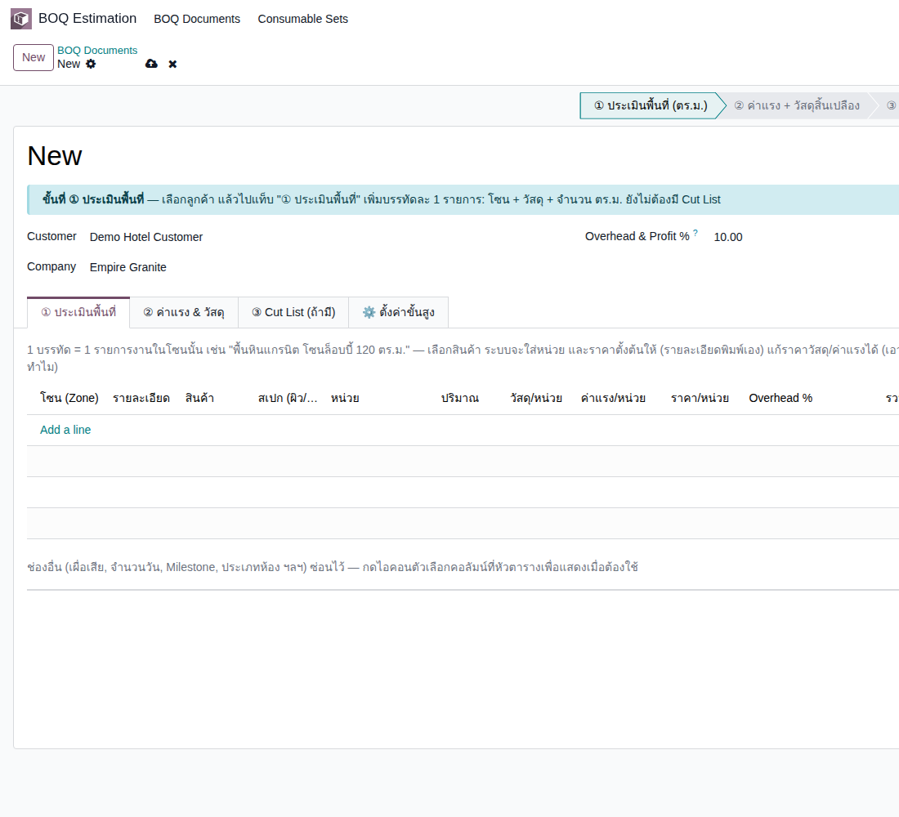 |
| TC-GP-BQ3-03 | เพิ่มบรรทัดหิน 2 โซน แล้วบันทึก รายละเอียด (ชื่องาน) ต้องพิมพ์เอง ระบบไม่เขียนทับให้ · ค่าแรง/หน่วยเว้น 0 ไว้ เพราะจะให้ระบบสร้างค่าแรงจากชุดค่าแรงในแท็บ ② (ควรใส่ที่เดียว ยังไม่ได้ทดลองกรอกทั้งสองที่) · ใช้ทีละช่อง ห้ามกด Enter หรือ Tab ข้ามช่อง |
ทำ TC-GP-BQ3-02 เสร็จแล้ว |
|
บรรทัด 1: โซน ล็อบบี้ · รายละเอียด เคาน์เตอร์ล็อบบี้ หินขาว ขัดมัน · สินค้า [ZZ2G-FG] ZZ2 GUIDE MARBLE Countertop · ปริมาณ 5.76 · กว้าง 60 · ยาว 120 · หนา 2 · บรรทัด 2: โซน ห้องน้ำชั้น 1 · รายละเอียด เคาน์เตอร์ห้องน้ำชั้น 1 หินขาว ขัดมัน · ปริมาณ 2.88 · ขนาดเท่ากัน | เลือกสินค้าแล้วระบบใส่ หน่วย m² และ วัสดุ/หน่วย 3,800.00 ให้ · บรรทัด 1: ราคา/หน่วย 3,800.00 · Overhead 10.00 · รวม 21,888.00 · บรรทัด 2 รวม 10,944.00 · Amount Direct Cost 32,832.00 · Overhead Profit 3,283.20 · Amount Total 36,115.20 · ได้เลข BOQ (รอบทดสอบ BOQ1130) | High | 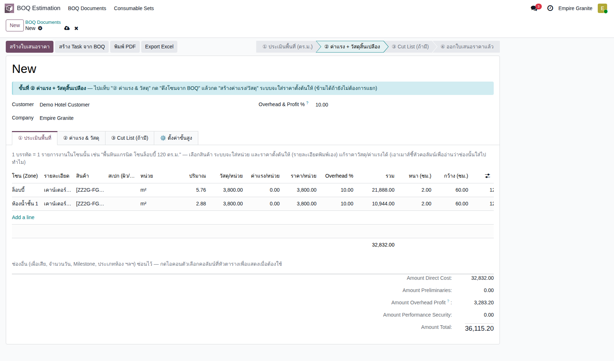 |
B. ค่าแรงและวัสดุสิ้นเปลือง
เลือกชุดตั้งต้น · ดึงโซน · สร้างบรรทัดอัตโนมัติ · 2 test cases
| TC ID | Scenario | Precondition | Steps | ข้อมูลตัวอย่าง | Expected Result | Priority | ภาพหน้าจอ |
|---|---|---|---|---|---|---|---|
| TC-GP-BQ3-04 | เลือกชุดวัสดุสิ้นเปลืองและชุดค่าแรง แล้วดึงโซนจาก BOQ ชุดราคาตั้งต้นสร้างไว้แล้วในคู่มือกดตาม Setup ระบบ (ส่วนชุด BOQ) · ถ้าโซนไหนต้องใช้ชุดอื่น เลือกชุดในตารางโซนได้ |
ทำ TC-GP-BQ3-03 เสร็จแล้ว · มีชุด ZZ ชุดวัสดุพื้นมาตรฐาน (150 ต่อ ตร.ม.) และ ZZ ชุดค่าแรงติดตั้งพื้น (1,500 ต่อ ตร.ม.) |
|
ชุดวัสดุ = ZZ ชุดวัสดุพื้นมาตรฐาน · ชุดค่าแรง = ZZ ชุดค่าแรงติดตั้งพื้น | ตารางโซนมี 2 แถว: ล็อบบี้ พื้นที่ 5.76 เผื่อเสีย 0.00 พื้นที่รวมเผื่อ 5.76 วัสดุ/ตร.ม. 150.00 ค่าแรง/ตร.ม. 1,500.00 · ห้องน้ำชั้น 1 พื้นที่ 2.88 วัสดุ/ตร.ม. 150.00 ค่าแรง/ตร.ม. 1,500.00 | High | 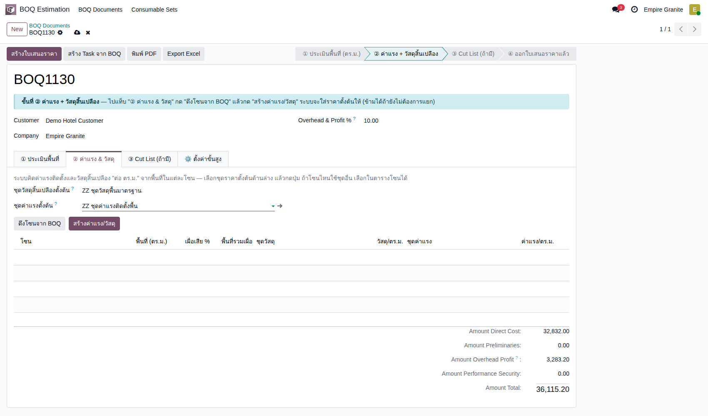 |
| TC-GP-BQ3-05 | สร้างค่าแรง/วัสดุ แล้วตรวจบรรทัดที่เพิ่มในแท็บ ① ระบบเพิ่มบรรทัดวัสดุสิ้นเปลืองและค่าแรงต่อโซนให้เอง · ถ้ากดสร้างซ้ำหลังแก้พื้นที่ ระบบคิดใหม่จากพื้นที่ล่าสุด |
ทำ TC-GP-BQ3-04 เสร็จแล้ว |
|
- | แท็บ ① มี 6 บรรทัด: หิน 2 · วัสดุสิ้นเปลืองล็อบบี้ 5.76 × 150 = 864.00 · ค่าแรงติดตั้งล็อบบี้ 5.76 × 1,500 = 8,640.00 · วัสดุสิ้นเปลืองห้องน้ำ 2.88 × 150 = 432.00 · ค่าแรงติดตั้งห้องน้ำ 2.88 × 1,500 = 4,320.00 · Amount Direct Cost 47,088.00 · Overhead Profit 4,708.80 · Amount Total 51,796.80 | High | 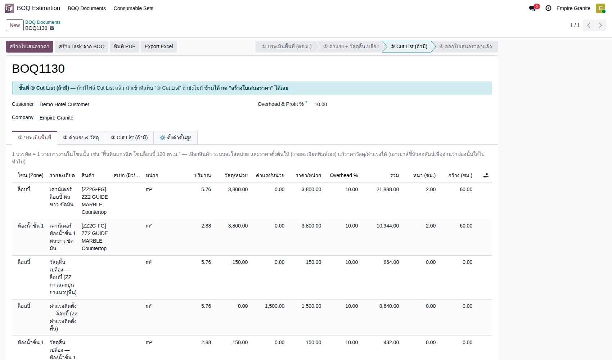 |
C. ใบเสนอราคา และไฟล์ส่งลูกค้า
Export Excel · พิมพ์ PDF · สร้างใบเสนอราคา · 3 test cases
| TC ID | Scenario | Precondition | Steps | ข้อมูลตัวอย่าง | Expected Result | Priority | ภาพหน้าจอ |
|---|---|---|---|---|---|---|---|
| TC-GP-BQ3-06 | Export Excel ของ BOQ ไฟล์สรุปตามโซน มี Sub-Total ต่อโซน · ใช้ส่งลูกค้าตรวจ/แก้ก่อนออกใบเสนอราคาได้ |
ทำ TC-GP-BQ3-05 เสร็จแล้ว |
|
- | ได้ไฟล์ BOQ1130.xlsx แผ่น BOQ: Bill of Quantities · BOQ No. · Customer Demo Hotel Customer · Company Empire Granite · ตารางคอลัมน์ Schedule / Zone · Description · Unit · Qty · Rate / Unit · Amount · โซนล็อบบี้ 3 บรรทัด Sub-Total 31,392 · โซนห้องน้ำ 3 บรรทัด Sub-Total 15,696 · Amount Direct Cost 47,088 · Overhead & Profit (10%) 4,708.80 · Total Amount 51,796.80 | Medium | 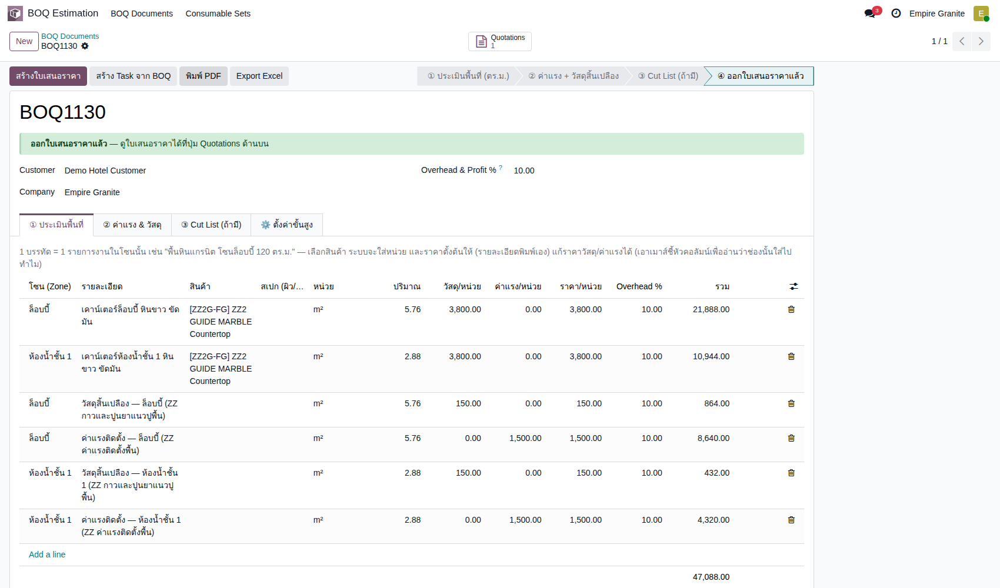 |
| TC-GP-BQ3-07 | พิมพ์ PDF ของ BOQ ภาพประกอบเป็นหน้าแรกของ PDF ที่ได้จริง |
ทำ TC-GP-BQ3-05 เสร็จแล้ว |
|
- | ได้ไฟล์ BOQ - BOQ1130.pdf 1 หน้า: Bill of Quantities · BOQ No. BOQ1130 · Customer Demo Hotel Customer · โซนล็อบบี้ (หิน 5.76 m² × 3,800 = 21,888.00 · วัสดุสิ้นเปลือง 864.00 · ค่าแรง 8,640.00 · Sub-Total 31,392.00) · โซนห้องน้ำ (Sub-Total 15,696.00) · Amount Direct Cost 47,088.00 · Overhead & Profit (10.00%) 4,708.80 · Total Amount 51,796.80 · ท้ายหน้าบริษัท Empire Granite | Medium | 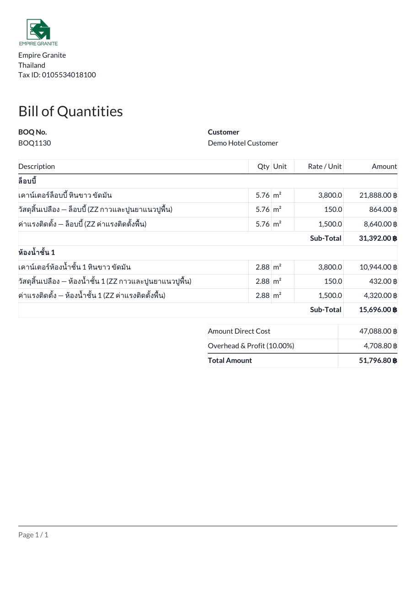 |
| TC-GP-BQ3-08 | สร้างใบเสนอราคาจาก BOQ ใบเสนอราคาจัดเป็นหมวดตามโซน มีบรรทัดค่าบริหารโครงการ 10% ท้ายใบ · ขนาด 60 × 120 ซม. แตกเป็นรายชิ้นให้เอง (5.76 ÷ 0.72 = 8 ชิ้น · 2.88 ÷ 0.72 = 4 ชิ้น) |
ทำ TC-GP-BQ3-05 เสร็จแล้ว |
|
- | ใบเสนอราคา (รอบทดสอบ S01704) ช่อง BOQ Document ชี้ BOQ1130 · หมวดล็อบบี้: หิน 5.760 m² × 3,800.00 ขนาด 60 × 120 ซม. × 8 ชิ้น หนา 2 ซม. · วัสดุสิ้นเปลือง 5.760 × 150.00 · ค่าแรงติดตั้ง 5.760 × 1,500.00 · หมวดห้องน้ำ: หิน 2.880 × 3,800.00 × 4 ชิ้น · วัสดุสิ้นเปลือง 2.880 × 150.00 · ค่าแรงติดตั้ง 2.880 × 1,500.00 · ค่าบริหารโครงการ 4,708.80 · Untaxed 51,796.80 · VAT 7% 3,625.78 · Total 55,422.58 | High | 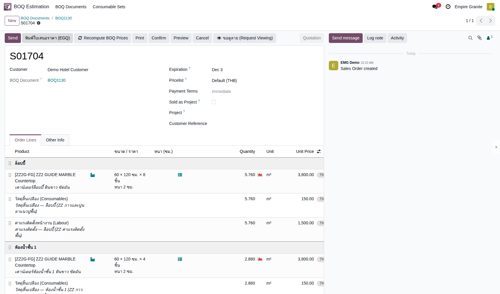 |
D. ยืนยัน ผลิต ส่งของ และเก็บเงิน
Confirm · ผลิต FG ทั้งสองโซน · ต้นทุนวัสดุ/ค่าแรงติดตั้ง · ส่งของ · ใบแจ้งหนี้ · 6 test cases
| TC ID | Scenario | Precondition | Steps | ข้อมูลตัวอย่าง | Expected Result | Priority | ภาพหน้าจอ |
|---|---|---|---|---|---|---|---|
| TC-GP-BQ3-09 | Confirm ใบเสนอราคา ได้ใบสั่งผลิตหนึ่งใบต่อโซน บรรทัดวัสดุสิ้นเปลืองและค่าแรงเป็นบริการ ไม่สร้างใบสั่งผลิต |
ทำ TC-GP-BQ3-08 เสร็จแล้ว · มี Slab ZZ2 GUIDE MARBLE ที่ Available อย่างน้อย 3 แผ่น |
|
- | ใบสั่งขาย (S01704) · Delivery 1 · FG Production 2 · ยอดเดิม 51,796.80 / 55,422.58 | High | 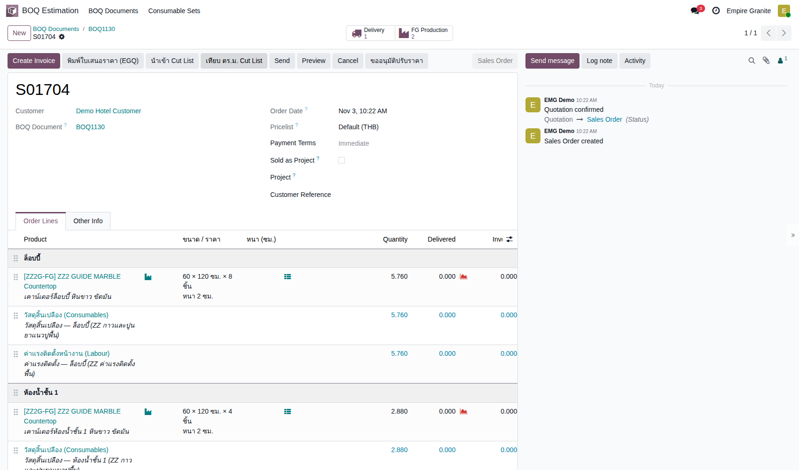 |
| TC-GP-BQ3-10 | ใบสั่งผลิตล็อบบี้ (Draft): ขนาดจาก BOQ และ Slab ที่ระบบเลือก ขนาดชิ้นที่พิมพ์ใน BOQ ติดมาถึงใบสั่งผลิตโดยไม่ต้องกรอกซ้ำ |
ทำ TC-GP-BQ3-09 เสร็จแล้ว |
|
- | ใบสั่งผลิต (EG01/STFG/00437) Draft · ต้องใช้ 6.34 ตร.ม. (5.76 + เผื่อเสีย 10%) · Slab ที่เลือก 8.70 ตร.ม. ป้าย พอ · แท็บ Slab ที่จะตัด: พื้นที่งาน 5.76 · ต้องใช้รวมเผื่อเสีย 6.34 · แผ่นที่เลือก BLK-26-1482-26 และ -27 (แผ่นละ 1.50 × 2.90 × 0.030 ม. = 4.35 ตร.ม.) | High | 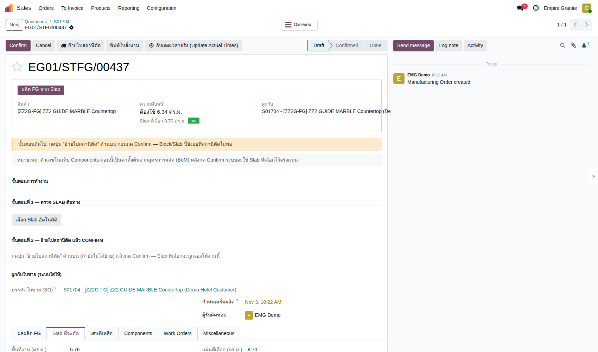 |
| TC-GP-BQ3-11 | ผลิตใบสั่งผลิตล็อบบี้จนเสร็จ และดูต้นทุน ต้องกด ย้ายไปสถานีตัด ก่อน Confirm · หลังกด ผลิต FG เสร็จ ให้รีเฟรชหน้า เพราะหน้าจออาจยังโชว์สถานะเดิมช่วงสั้นๆ · ค่าแรงโรงงาน 1,500 ต่อ ตร.ม. มาจากหมวดสินค้า ส่วนชุดค่าแรงของ BOQ 1,500 เป็นราคาขาย (ปรับขึ้นจาก 800 เมื่อ 3 พ.ย. 2569) · ต้นทุนวัสดุสิ้นเปลือง (90 ต่อ ตร.ม.) และค่าแรงติดตั้ง (500 ต่อ ตร.ม.) ของชุดใน BOQ ลงบัญชีตอนผลิตเสร็จ เป็นต้นทุนประมาณการ เครดิตเข้า Accrued Expenses (แก้ตอนทดสอบรอบสอง 3 พ.ย. 2569) |
ทำ TC-GP-BQ3-10 เสร็จแล้ว |
|
- | หลังผลิตเสร็จ Done · รายการบัญชี Posted 5 รายการ: Inventory Valuation 8,149.12 สองรายการ (Slab 2 แผ่น) · FG Production Labor 8,640.00 (5.76 × 1,500) · BOQ Consumables 518.40 (5.76 × 90) · BOQ Install Labour 2,880.00 (5.76 × 500) | High | |
| TC-GP-BQ3-12 | ใบสั่งผลิตห้องน้ำ: ระบบเลือก Slab ไม่ซ้ำกับใบแรก แล้วผลิตจนเสร็จ เคยเป็นบั๊ก: ใบสั่งผลิต Draft สองใบได้ Slab ชุดเดียวกัน แล้ว ย้ายไปสถานีตัด ของใบที่สองล้ม · แก้แล้ว (stone_slab_inventory 19.0.2.109.64) ปุ่ม เลือก Slab อัตโนมัติ ข้ามแผ่นที่ใบ Draft อื่นรายการไว้แล้ว |
ทำ TC-GP-BQ3-11 เสร็จแล้ว |
|
- | Slab ที่เลือกคือ BLK-26-1482-28 (4.35 ตร.ม. พอสำหรับ 3.17) ไม่ซ้ำกับสองแผ่นของใบล็อบบี้ · ไม่มีข้อความผิดพลาด · ใบสั่งผลิต (EG01/STFG/00438) Done · รายการบัญชี: Slab 4,074.56 สองรายการ · ค่าแรง 4,320.00 (2.88 × 1,500) · BOQ Consumables 259.20 · BOQ Install Labour 1,440.00 | High | 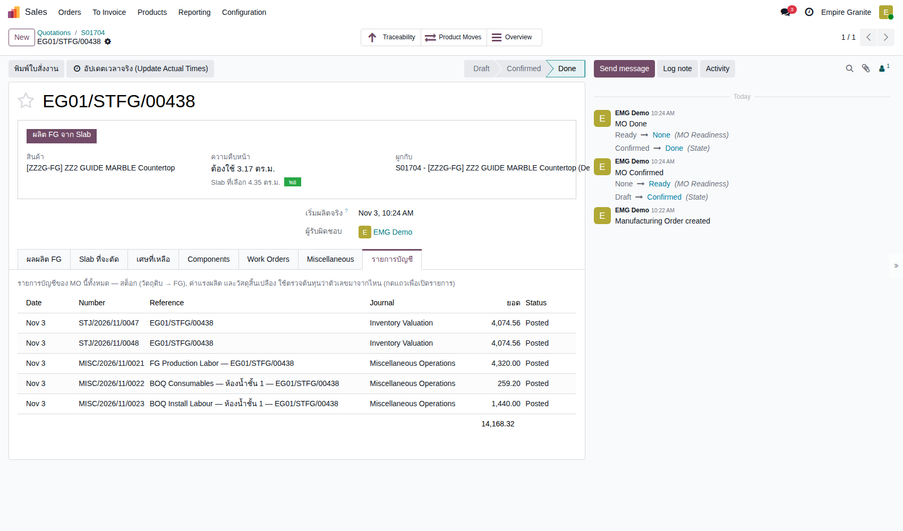 |
| TC-GP-BQ3-13 | ส่งของตามใบส่งของ ใบส่งของใบเดียวครอบทั้งสองโซน |
ทำ TC-GP-BQ3-12 เสร็จแล้ว |
|
- | ใบส่งของ (EG01/OUT/00727) Ready ก่อนกด · 2 บรรทัด: 5.760 m² และ 2.880 m² · หลัง Validate สถานะ Done · จำนวนที่ส่งเท่ากับที่ขายทุกบรรทัด | High | 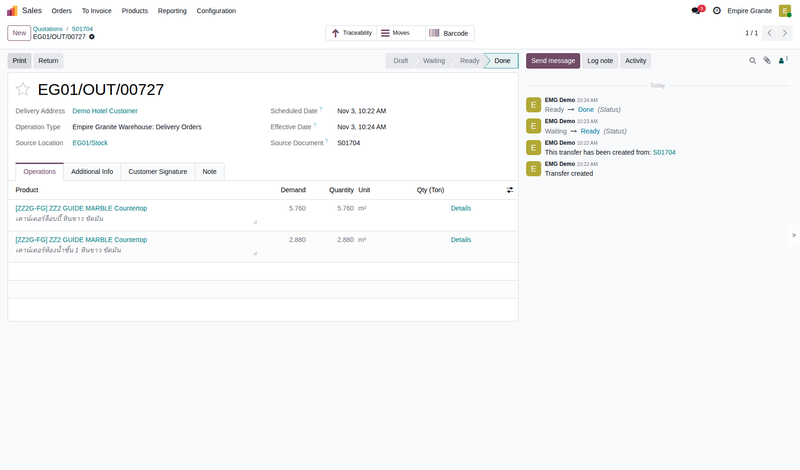 |
| TC-GP-BQ3-14 | ออกใบแจ้งหนี้ ต่างจากเส้นทาง 2 ตรงที่ไม่มีส่วนต่างพื้นที่ ใบแจ้งหนี้จึงเท่าใบเสนอราคา |
ทำ TC-GP-BQ3-13 เสร็จแล้ว |
|
- | ใบแจ้งหนี้ (INV/2026/00013) Posted · หิน 5.760 และ 2.880 × 3,800.00 · วัสดุสิ้นเปลือง 864.00 และ 432.00 · ค่าแรงติดตั้ง 8,640.00 และ 4,320.00 · ค่าบริหารโครงการ 4,708.80 · ก่อน VAT 51,796.80 · VAT 7% 3,625.78 · รวม 55,422.58 (เท่าใบเสนอราคา) | High | 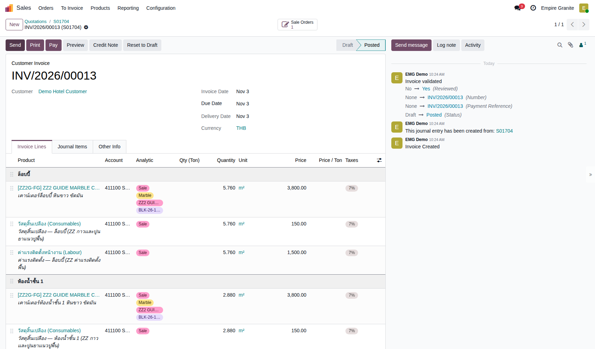 |